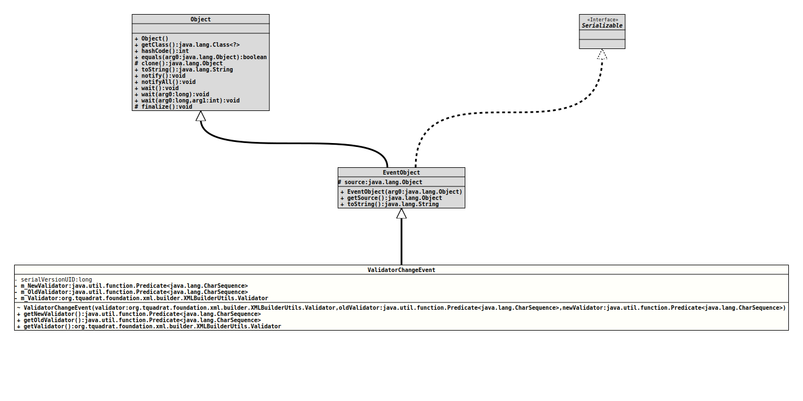

Module org.tquadrat.foundation.xml
Class XMLBuilderUtils.ValidatorChangeEvent
java.lang.Object
java.util.EventObject
org.tquadrat.foundation.xml.builder.XMLBuilderUtils.ValidatorChangeEvent
- All Implemented Interfaces:
Serializable
- Enclosing class:
- XMLBuilderUtils
@ClassVersion(sourceVersion="$Id: XMLBuilderUtils.java 1030 2022-04-06 13:42:02Z tquadrat $")
@API(status=STABLE,
since="0.0.5")
public static class XMLBuilderUtils.ValidatorChangeEvent
extends EventObject
The
EventObject
for changes to the validator configuration.- Author:
- Thomas Thrien (thomas.thrien@tquadrat.org)
- Version:
- $Id: XMLBuilderUtils.java 1030 2022-04-06 13:42:02Z tquadrat $
- Since:
- 0.0.5
- See Also:
- UML Diagram
-

UML Diagram for "org.tquadrat.foundation.xml.builder.XMLBuilderUtils.ValidatorChangeEvent"
{kind=link}
-
Field Summary
FieldsModifier and TypeFieldDescriptionprivate final Predicate<CharSequence>The new validator.private final Predicate<CharSequence>The previous validator.private final XMLBuilderUtils.ValidatorThe validator that changed.Fields inherited from class java.util.EventObject
source -
Constructor Summary
ConstructorsConstructorDescriptionValidatorChangeEvent(XMLBuilderUtils.Validator validator, Predicate<CharSequence> oldValidator, Predicate<CharSequence> newValidator) Creates a newValidatorChangeEventinstance. -
Method Summary
Modifier and TypeMethodDescriptionfinal Predicate<CharSequence>Returns the new validator.final Predicate<CharSequence>Returns the previous validator.Gets the validator that was changed.Methods inherited from class java.util.EventObject
getSource, toString
-
Field Details
-
m_NewValidator
The new validator. -
m_OldValidator
The previous validator. -
m_Validator
The validator that changed.
-
-
Constructor Details
-
ValidatorChangeEvent
ValidatorChangeEvent(XMLBuilderUtils.Validator validator, Predicate<CharSequence> oldValidator, Predicate<CharSequence> newValidator) Creates a newValidatorChangeEventinstance.- Parameters:
validator- The validator that changed.oldValidator- The previous validator.newValidator- The new validator.
-
-
Method Details
-
getNewValidator
Returns the new validator.- Returns:
- The new validator.
-
getOldValidator
Returns the previous validator.- Returns:
- The old validator.
-
getValidator
Gets the validator that was changed.- Returns:
- The changed validator.
-